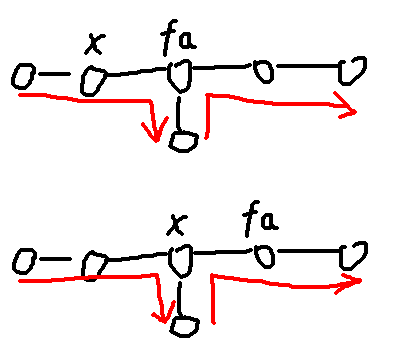
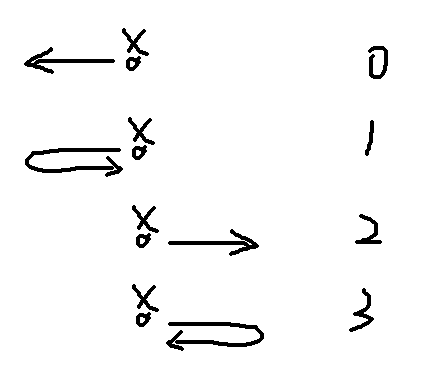

键入以搜索…
匹配算法：把输入按空格拆分，单独匹配每一段输入（不区分大小写，仅匹配文章文本内容），输出取或后的结果。
模糊搜索似乎很难搞，目前没有相关打算。
键入以搜索…
匹配算法：把输入按空格拆分，单独匹配每一段输入（不区分大小写，仅匹配文章文本内容），输出取或后的结果。
模糊搜索似乎很难搞，目前没有相关打算。
线段树是对的（存疑）
https://www.luogu.com.cn/problem/P8820
我在上一篇文章中提到了 DDP & 路径查询问题，在这个题中就有体现。
设 \(f_{u,0/1/2}\) 表示数据保存在 \(u\) 往下数 \(0/1/2\) 个点处的最小代价，手玩容易发现 \(k=3\) 时最优路径可能会往某个 \(x\) 或 \(fa\) 处的最小代价儿子处绕一圈来避免这个 \(x\) 或 \(fa\) 的代价。但该值是定值，问题还是纯路径问题，就可以 DDP 了。

#include <bits/stdc++.h>
struct mat {
long long a[3][3];
long long* operator[] (const int q) {
return a[q];
}
mat() {
memset(a, 0x3f, sizeof (a));
return;
}
mat(int flag) {
memset(a, 0x3f, sizeof (a));
a[0][0] = a[1][1] = a[2][2] = 0ll;
return;
}
mat operator* (mat &q) const {
mat res;
for (int i = 0; i < 3; ++i)
for (int k = 0; k < 3; ++k)
for (int j = 0; j < 3; ++j)
res[i][k] = std::min(res[i][k], a[i][j] + q[j][k]);
return res;
}
mat& operator*= (mat &q) {
return *this = *this * q;
}
};
int main() {
#ifdef ONLINE_JUDGE
std::ios::sync_with_stdio(false);
std::cin.tie(nullptr), std::cout.tie(nullptr);
#else
std::freopen(".in", "r", stdin);
std::freopen(".out", "w", stdout);
const auto stime = std::chrono::steady_clock::now();
#endif
int n, q, k;
std::cin >> n >> q >> k;
std::vector<int> a(n + 1);
for (int i = 1; i <= n; ++i)
std::cin >> a[i];
std::vector<int> mx(n + 1, 0x3f3f3f3f);
std::vector<std::vector<int> > g1(n + 1);
for (int i = 1, x, y; i < n; ++i) {
std::cin >> x >> y;
mx[x] = std::min(mx[x], a[y]);
mx[y] = std::min(mx[y], a[x]);
g1[x].push_back(y), g1[y].push_back(x);
}
std::vector<int> dep(n + 1);
std::vector<std::array<int, 18> > f(n + 1);
std::vector<std::array<mat, 18> > u(n + 1), d(n + 1);
u[0][0] = d[0][0] = mat(1);
std::function<void(int)> DFS = [&](int x) {
for (auto i : g1[x])
if (i != f[x][0]) {
f[i][0] = x;
{
mat s;
s[0][0] = a[x];
if (k >= 2) {
s[0][1] = 0;
s[1][0] = a[x];
}
if (k >= 3) {
s[1][2] = 0;
s[2][0] = a[x];
s[1][1] = mx[x];
s[2][2] = mx[i];
}
u[i][0] = s;
s[0][0] = a[i];
if (k >= 2)
s[1][0] = a[i];
if (k >= 3) {
s[2][0] = a[i];
s[1][1] = mx[i];
s[2][2] = mx[x];
}
d[i][0] = s;
}
for (int j = 1; j < 18; ++j) {
f[i][j] = f[f[i][j - 1]][j - 1];
u[i][j] = u[i][j - 1] * u[f[i][j - 1]][j - 1];
d[i][j] = d[f[i][j - 1]][j - 1] * d[i][j - 1];
}
dep[i] = dep[x] + 1;
DFS(i);
}
return;
};
dep[1] = 1, DFS(1);
for (int x, y; q--; ) {
std::cin >> x >> y;
long long res = a[x];
mat r1(1), r2(1);
if (dep[x] > dep[y]) {
for (int i = 17; ~i; --i)
if (dep[f[x][i]] >= dep[y]) {
r1 = r1 * u[x][i];
x = f[x][i];
}
}
else if (dep[y] > dep[x]) {
for (int i = 17; ~i; --i)
if (dep[f[y][i]] >= dep[x]) {
r2 = d[y][i] * r2;
y = f[y][i];
}
}
if (x != y) {
for (int i = 17; ~i; --i)
if (f[x][i] != f[y][i]) {
r1 = r1 * u[x][i];
r2 = d[y][i] * r2;
x = f[x][i], y = f[y][i];
}
r1 = r1 * u[x][0], r2 = d[y][0] * r2;
}
std::cout << res + (r1 * r2)[0][0] << '\n';
}
#ifndef ONLINE_JUDGE
std::cerr << std::fixed << std::setprecision(6) << std::chrono::duration<double> (std::chrono::steady_clock::now() - stime).count() << "s\n";
#endif
return 0;
}题意：初始有一个长为 \(10^8\) 的空数轴，给定 \(n\) 次操作，每次操作在数轴上的一个空位放一个 A 类点或 B 类点。每个 A 类点有其价值。
任意在数轴上移动这些 B 类点，总价值为所有被经过的 A 类点的价值 - B 类点移动总路程。每次操作后输出最大总价值，重复经过的 A 类点只计一次。
\(n\le 2\times 10^5\)。
这个题确实可以带来很多启发，我一开始直接设 \(f_j\) 为状态，这样对于暴力是可做的，但是会出现一些需要被区间修改的系数，比如前缀和。最好设计状态，让转移的时候只需要用到常数、差分值等修改次数很少的系数。
设 \(f_{i,0/1/2/3}\) 分别表示：

那么可以写出转移式：
\[ f_{i,0}=\max(mx+a_i+x_i,f_{i-1,0}+a_i)\\ f_{i,1}=\max(mx+a_i+2x_i,f_{i-1,1}+a_i)\\ f_{i,2}=f_{i-1,2}-(x_i-x_{i-1}) + a_i\\ f_{i,3}=f_{i-1,3}-2(x_i-x_{i-1})+a_i \]
其中 \(mx\) 为 \(f_{i,2/3}\) 的前缀最大值。在 B 类点处可以让 \(f_{2/3}\) 继承对应的 \(f_{0/1}\)，新开一维记录 \(mx\) 就可以维护矩乘了。
#include <bits/stdc++.h>
const int lim = 1e8;
const int maxn = 5e6 + 5;
const long long inf = 1e12;
struct mat {
long long a[5][5];
mat() {}
long long* operator[] (const int q) {
return a[q];
}
mat operator* (mat &q) const {
mat res;
for (int i = 0; i < 5; ++i)
for (int k = 0; k < 5; ++k) {
auto u(-inf);
for (int j = 0; j < 5; ++j)
u = std::max(u, a[i][j] + q[j][k]);
res[i][k] = u;
}
return res;
}
mat& operator*= (mat &q) {
return *this = *this * q;
}
};
struct { int l, r; mat u; } t[maxn];
#define lt t[p].l
#define rt t[p].r
void add(int &p, int l, int r, int x, mat &v) {
static int tot = 0;
if (!p)
p = ++tot;
if (l == r) {
t[p].u = v;
return;
}
int mid = (l + r) >> 1;
if (x <= mid)
add(lt, l, mid, x, v);
else
add(rt, mid + 1, r, x, v);
t[p].u = t[lt].u * t[rt].u;
return;
}
#undef lt
#undef rt
int main() {
#ifdef ONLINE_JUDGE
std::ios::sync_with_stdio(false);
std::cin.tie(nullptr), std::cout.tie(nullptr);
#else
std::freopen(".in", "r", stdin);
std::freopen(".out", "w", stdout);
const auto stime = std::chrono::steady_clock::now();
#endif
{
mat &u = t[0].u;
for (int i = 0; i < 5; ++i)
for (int j = 0; j < 5; ++j)
u[i][j] = -inf;
u[0][0] = u[1][1] = u[2][2] = u[3][3] = u[4][4] = 0ll;
}
int m, rt = 0;
std::cin >> m;
std::vector<mat> a(m + 1);
std::vector<int> ty(m + 1);
std::set<std::pair<long long, int> > s;
s.emplace(-inf, 0);
for (int op, x, i = 1; i <= m; ++i) {
std::cin >> op >> x;
auto &u = a[i];
for (int i = 0; i < 5; ++i)
for (int j = 0; j < 5; ++j)
u[i][j] = -inf;
auto p = --s.lower_bound(std::make_pair(x, 0)), q = s.upper_bound(std::make_pair(x, 0));
int v = 0;
if (op == 2)
std::cin >> v;
u[0][0] = v, u[1][1] = v, u[4][0] = v + x, u[4][1] = v + 2 * x;
if (op == 1) {
ty[i] = 0;
u[4][2] = u[4][1] - 2 * x;
u[1][2] = u[1][1] - 2 * x;
u[4][3] = u[4][0] - x;
u[0][3] = u[0][0] - x;
}
else {
ty[i] = 1;
u[2][2] = v - (x - p->first);
u[3][3] = v - 2 * (x - p->first);
}
u[4][4] = std::max({ 0ll, u[4][2], u[4][3] });
u[1][4] = u[1][2], u[0][4] = u[0][3], u[2][4] = u[2][2], u[3][4] = u[3][3];
add(rt, 0, lim, x, u);
if (q != s.end() && ty[q->second] == 1) {
auto &u = a[q->second];
u[2][2] -= p->first, u[2][2] += x;
u[3][3] -= 2 * p->first, u[3][3] += 2 * x;
u[2][4] = u[2][2], u[3][4] = u[3][3];
add(rt, 0, lim, q->first, a[q->second]);
}
s.emplace(x, i);
std::cout << t[1].u[4][4] << '\n';
// for (int i = 0; i < 5; ++i, puts(""))
// for (int j = 0; j < 5; ++j)
// if (t[1].u[i][j] < -200)
// printf(" x ");
// else
// printf("%3lld ", t[1].u[i][j]);
// puts("=============");
}
#ifndef ONLINE_JUDGE
std::cerr << std::fixed << std::setprecision(6) << std::chrono::duration<double> (std::chrono::steady_clock::now() - stime).count() << "s\n";
#endif
return 0;
}link;